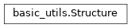

basic_utils module¶
Class Inheritance Diagram¶

A collection of orbital functions and a class for storing data.
-
class
basic_utils.Structure(**initial_attributes)[source]¶ Bases:
object
An empty class used only to hold user defined attributes.
-
basic_utils.calc_orbital_angular_momentum(m1, m2, semimajor, eccentricity)[source]¶ Return the angular momentum of the given orbit.
Parameters: - m1 (-) – Mass of the first body in the system
- m2 (-) – Mass of the second body in the system.
- semimajor (-) – The semimajor axis of the binary in solar radii.
- eccentricity (-) – The eccentricity of the orbit.
Returns: The orbital angular momentum in solar units for a binary with the given bodies in the given orbit.
-
basic_utils.calc_orbital_frequency(m1, m2, semimajor)[source]¶ Return the orbital for a binary with the given orbit.
Parameters: - m1 (-) – Mass of the first body in the system
- m2 (-) – Mass of the second body in the system.
- semimajor (-) – The semimajor axis of the binary in solar radii.
Returns: The orbital angular velocity in rad / day.
-
basic_utils.calc_semimajor(m1, m2, orbital_period)[source]¶ Return the semimajor axis for a binary with the given orbit.
Parameters: - m1 (-) – Mass of the first body in the system
- m2 (-) – Mass of the second body in the system.
- orbital_period (-) – The orbital period of the binary in days.
Returns: The semimajor axis in solar radii.